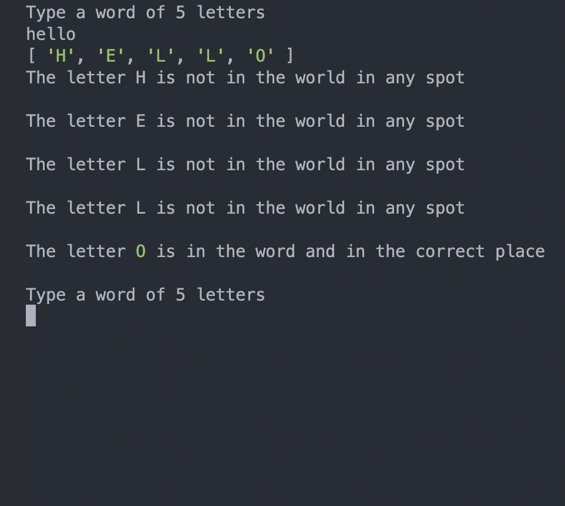
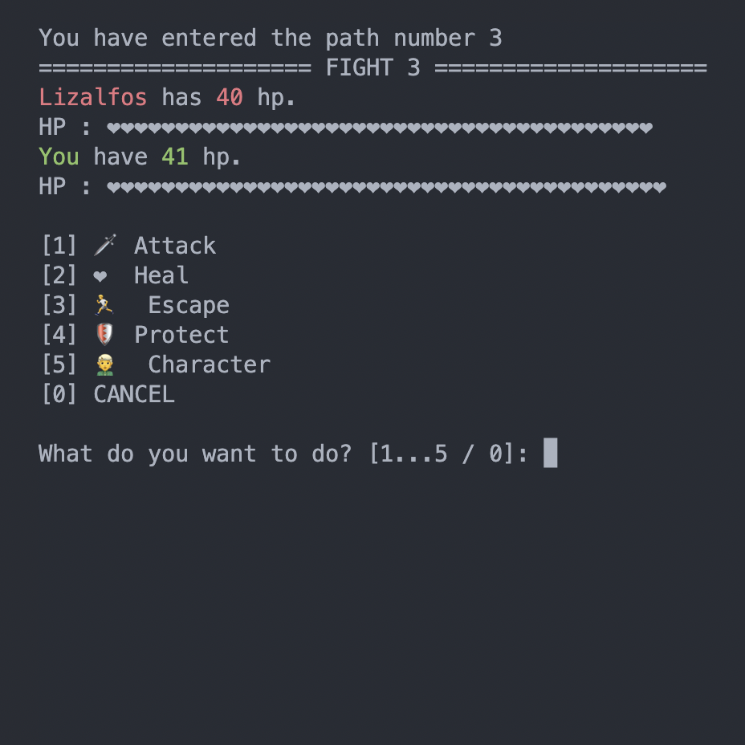
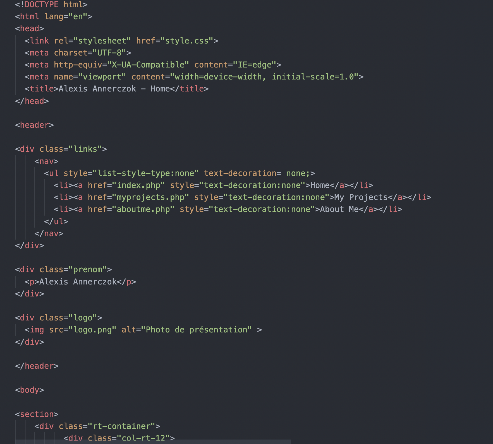
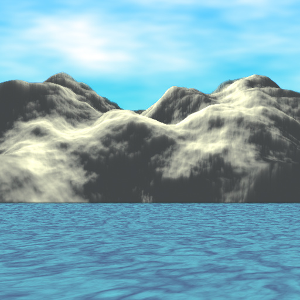

Wordle
Wordle est un petit jeu de lettres créé en TypeScript par Alexis Annerczok le 24/09/2022
Zelda RPG
Zelda RPG est un jeu de type rpg créé en TypeScript par Alexis Annnerczok et Raphael Plassart du 28/09/2022 au 01/10/2022
MyCv
MyCv est un CV en ligne créé en HTML/CSS par Alexis Annerczok le 05/10/2022
TowerDefense
TowerDefense est un jeu de type towerdefense créé en python par Alexis Annerczok en 2021
Pekomen

Pekomen est un remake de pokemon créé en python par Alexis Annerczok en 2021